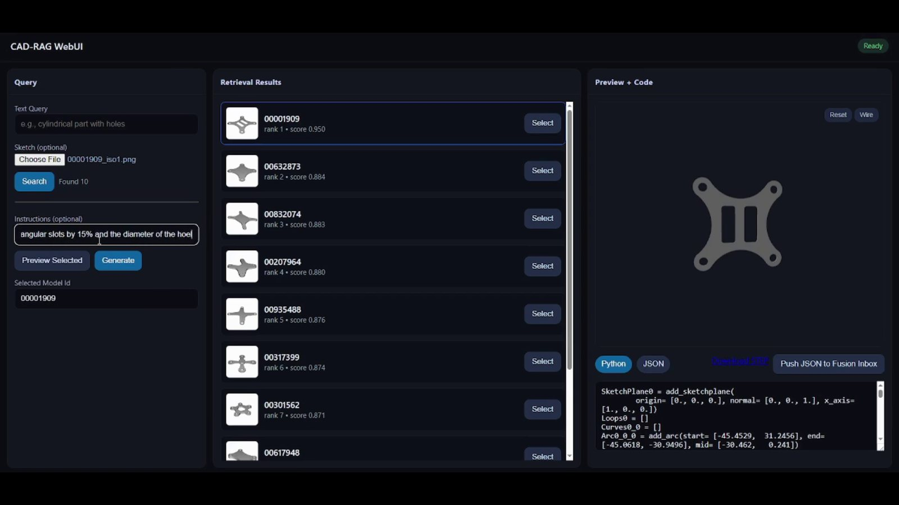

The idea
Find the closest existing design and edit it, with the result opening in the engineer's own CAD software. The engineers' ratings and complaints then pointed at two harder problems, which became the TE busbar system and Abra-CAD.
1Background
Bottom-up design is only 30–40 percent of the time… Can you use AI to modify an existing design to a new design?
Most research on AI for CAD generates a part from nothing. In a company, a new part usually starts from an old one. The engineer finds the closest existing design and changes it. desAIgn works was founded on that observation, with Prof. Ramanathan Muthuganapathy, Prof. Palaniappan Ramu and Dr. Anand Ramani, formerly Chief Scientist at GE.
2What we built
The product was a retrieve-and-edit CAD engine for enterprises, built on CAD-RAG. A query in text or as a sketch returns ranked models from the company's own library. An instruction in plain language edits the chosen model, and the result opens in Fusion 360 with its construction history. As lead engineer I remodelled the machine-learning pipeline to run on consumer GPUs, with 40% faster inference.



3What the engineers said
In 2024, eight senior design engineers looked at the ideas and rated them. Their experience ranged from 6 to 31 years, about 20 on average.
| Idea shown | Mean rating, of 10 |
|---|---|
| Native data and history across CAD formats | 9.0 |
| Hand sketch to 3D CAD | 8.5 |
| User-guided, step-by-step part creation | 8.1 |
| Construct as you sketch | 8.1 |
| Retrieval from a 2D sketch | 7.1 |
The lowest rating is the instructive one. Two engineers called sketch retrieval “not so useful” because their companies already catalogue parts by text. The highest rating went to keeping native data and history across CAD formats, which is about preserving what the engineer can edit.
Asked what irritates them in daily CAD work, they named three things most often:
- Fillets that fail with no root cause given.
- Fillets and chamfers that do not update when the model changes.
- Dimensioning drawings from views, which one engineer called “scope for huge productivity improvement”.
Can AI suggest the best tolerances, bolt sizes from handbooks?
4Three requests, three systems
Read together, the requests are about controlling the variables of a design and checking that a change is feasible before it is made.
5Where it went
desAIgn works ran from November 2024 to August 2025. The work continued through IIT Madras with TE Connectivity, where the request about handbooks and standards became the busbar design system. The request about point clouds became Abra-CAD.
The same line of work now feeds VAIPER, a proposed IIT Madras Centre of Excellence for AI-native product engineering, with Prof. Palaniappan Ramu as principal investigator. I made the video below for the proposal.